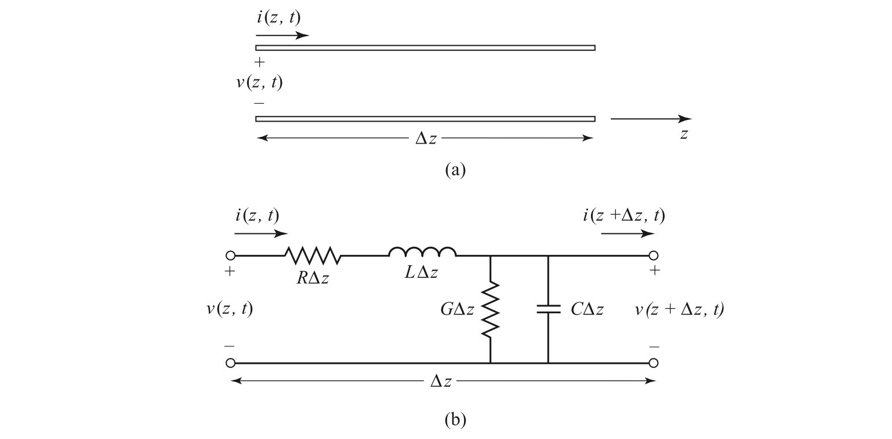

A Deep Dive into Transmission Line Modeling with RLGC Parameters
Transmission lines are the backbone of high-frequency circuits, guiding electromagnetic waves from one point to another. While at low frequencies we can treat wires as ideal short circuits, at higher frequencies, their physical length becomes a significant fraction of the signal's wavelength. This means we can no longer ignore the time it takes for a signal to travel down the wire. To accurately predict signal behavior, we must model the transmission line using its distributed parameters: resistance (R), inductance (L), conductance (G), and capacitance (C).
This article provides a comprehensive guide to understanding and modeling RLGC transmission lines. We will cover:
- The derivation of the fundamental Transmission Line (Telegrapher's) Equations.
- The concepts of characteristic impedance, propagation constant, and input impedance.
- Converting between the physical RLGC model and the wave-based propagation constant (γ) and characteristic impedance (Z₀) model.
- Representing the transmission line as a two-port network using S, Z, Y, and ABCD parameters.
- Practical examples of how to extract these crucial parameters from simulations.
1. The Fundamental Transmission Line Equations
To understand how voltages and currents propagate, we start by modeling the transmission line as an infinite series of infinitesimally small, lumped-element segments. Each segment, of length $\Delta z$, contains the distributed parameters:
- R: The series resistance per unit length (in Ω/m).
- L: The series inductance per unit length (in H/m).
- G: The shunt conductance per unit length (in S/m), representing dielectric loss.
- C: The shunt capacitance per unit length (in F/m).

Deriving the Telegrapher's Equations
By applying Kirchhoff's Voltage Law (KVL) and Kirchhoff's Current Law (KCL) to this infinitesimal segment, we can derive the governing equations.
Applying KVL around the loop:
Rearranging and dividing by $\Delta z$, then set $\Delta z\to0$ becomes the Telegrapher's Equations:
The Frequency-Domain Solution
For steady-state sinusoidal signals (the basis of most RF and microwave analysis), we can simplify these partial differential equations by moving to the frequency domain using phasors, where $v(z,t) = \Re\{V(z)e^{jωt}\}$. The time derivatives $\partial/\partial t$ are replaced by $j\omega$. The Telegrapher's Equations become:
With manipulation, it turns into
where $\gamma$ is the complex propagation constant:
- $\alpha$ (Alpha) is the attenuation constant in Nepers/m, representing the signal loss per unit length.
- $\beta$ (Beta) is the phase constant in radians/m, representing the phase shift per unit length.
The general solution to these second-order differential equations is:
$V(z)$ can be used to derive $I(z)$ as
Here, $V^+e^{-\gamma z}$ represents a forward-propagating wave (traveling in the +z direction) that decays, while $V^-e^{\gamma z}$ represents a reverse-propagating (reflected) wave.
The relationship between voltage and current for each wave is defined by the characteristic impedance $Z_0$:
This impedance is the ratio of voltage to current for a single wave traveling along the line. It is a fundamental property of the line's geometry and material properties.
The solution of $V(z)$ can be written in the time domain as $\mathrm{Re}[V(z)e^{j\omega t}]$
where we have
For lossless lines $\beta=\omega\sqrt{LC}$
2. Terminated Transmission Line
In practice, a transmission line is always connected to a load. Let's consider a line of length l terminated with a load impedance $Z_L$ at $z=l$. For convenience, we often place the load at $z=0$ and the input at $z=-l$.
At the load ($z=0$), the relationship between the total voltage and total current is fixed:
Reflection Coefficient
Any mismatch between the load impedance $Z_L$ and the characteristic impedance $Z_0$ will cause a portion of the incident wave to be reflected. The ratio of the reflected voltage wave to the incident voltage wave at the load is the reflection coefficient:
The voltage and current at any point $z$ can now be expressed in terms of the incident wave $V^+$ and the reflection coefficient $\Gamma$:
The maximal voltage amplitude to the minimal voltage amplitude is defined as standing wave ratio (SWR):
At arbitrary point, the reflection coefficient is
Input Impedance
The impedance seen looking into the transmission line from a distance l away from the load is the input impedance. This is a critical parameter for matching circuits.
As a special cases for lossless lines:
This leads to several important applications:
For a quarter-wavelength transmission line where $\beta l=\pi/2$, we have
An open stub where $Z_L=\infty$
An short stub where $Z_l=0$
3. Parameter Conversion
We have two equivalent ways to describe a transmission line: the physical RLGC parameters and the wave-behavior parameters $\gamma$ and $Z_0$. It's essential to know how to convert between them.
From RLGC to γ and Z₀
These are the definitions we've already used:
From γ and Z₀ to RLGC
By manipulating the equations above, we can solve for the RLGC parameters. From the product γZ₀ and the ratio γ/Z₀:
By taking the real and imaginary parts, we can isolate each component:
This conversion is extremely useful for extracting a physical circuit model from measured or simulated wave-based parameters.
4. Two-Port Network Parameters
A segment of transmission line of length $l$ can be fully characterized as a two-port network. This allows it to be easily integrated into larger circuit simulations. Below are the standard parameter matrices.
Note on Notation: For clarity, we will use $Z_c$ to represent the characteristic impedance of the transmission line itself and $Z_0$ to represent the port impedance of the measurement system (typically 50 Ω).
ABCD Parameters
ABCD parameters are useful for cascading networks. For a TL of length $l$:
Z and Y Parameters
Z (impedance) and Y (admittance) parameters relate the port voltages and currents.
S Parameters
S-parameters (scattering parameters) are the most common in high-frequency measurements, as they relate incident and reflected waves, which are easier to measure than total voltages and currents. For a TL referenced to a port impedance $Z_0$:
where the common denominator is:
5. Practical Parameter Extraction
Now let's apply this theory to extract the RLGC parameters from a simulated transmission line.
Direct Simulation
Connect the transmission line between two ports. Sweep the impedance of both ports at the target frequency and monitor the reflection coefficient ($S_{11}$). The port impedance that results in the minimum reflection ($S_{11}\approx0$) is the characteristic impedance of the line.

Real part of characteristic impedance is given by

Once the ports are matched to $Z_c$, the $S_{21}$ parameter directly gives you $e^{-\gamma l}$
From this, we can solve for α and β.
The above equations can be used to solve for γ. In this case, we have a transmission line with a length of $400\times10^{-6} \mathrm{m}$ and $S_{21}|_{Z=Z_0}=-0.22 dB/-28.95^\circ$. We can write
With $γ = α + jβ$ and $Z_c$ known, use the conversion formulas from Section 3 to find R, L, G, and C.
Calculation from S-Parameters
A more direct and robust method, which doesn't require finding the exact $Z_c$ first, is to calculate the RLGC parameters directly from the standard 50 Ω S-parameter matrix. This is based on converting the S-parameters to ABCD parameters and then solving for $γ$ and $Z_c$.
This functionality is built into many software tools. In MATLAB, the s2rlgc function from the RF Toolbox can do this automatically.
1 | PolartoComplex = @(len, the) len*cos(the*pi/180) + 1i*len*sin(the*pi/180); |
Corresponding output is
1 | R: 5.1717e+03 |
Verification of the Model
To confirm that the extracted RLGC parameters are accurate, you can build a lumped-element model using these values and compare its performance to the original distributed model. The line is broken into several smaller RLGC segments. If the model is accurate, the simulation results of the lumped model should closely match the original.

Detailed schematic of each one

Results

As seen in the results, the lumped-element approximation closely mimics the behavior of the original distributed transmission line, validating our extracted parameters.
Appendix
Field Solution
which can be transformed into
For that matter
We can use a complex permittivity to represent the loss and set $\sigma=0$
The intrinsic impedance is complex
Low-Loss Approximation
For a low-loss line both conductor and dielectric loss will be small
we have
How to convert $\gamma,Z$ parameters to $A, \epsilon_{eff},Z$ parameters?
where $\epsilon'=\epsilon_0\epsilon_{eff}$ and $Z_0=\sqrt{\mu_0/\epsilon_0}=377 \Omega$. These translates to
Distortion-less Line
In a lossy line, the phase term $\beta$ is generally a complicated function of frequency $\omega$. If $\beta$ is not a linear function of frequency, the phase velocity can vary with frequency, causing signal dispersion. A fascinating special case occurs even on a lossy line when the parameters satisfy the Heaviside condition:
Under this condition, the propagation constant simplifies to:
This means:
- Attenuation $α = R\sqrt{(C/L)}$ is constant with frequency.
- Phase constant $β = ω\sqrt{(LC)}$ is perfectly linear with frequency.
Since the phase velocity $v_p = ω/β$ is constant, a signal traveling down this line will be attenuated, but its shape will not be distorted by dispersion. This principle was historically important for long-distance telegraph cables.
Reference
- W. R. Eisenstadt and Y. Eo, "S-parameter-based IC interconnect transmission line characterization," in IEEE Transactions on Components, Hybrids, and Manufacturing Technology, vol. 15, no. 4, pp. 483-490, Aug. 1992. DOI: 10.1109/33.159877
- David M. Pozar. Microwave engineering, 4th Edition.
- Post link: https://triblemany.github.io/archives/afb86e77/transmission-line.html
- Copyright Notice: All articles in this blog are licensed under BY-NC-SA unless stating additionally.